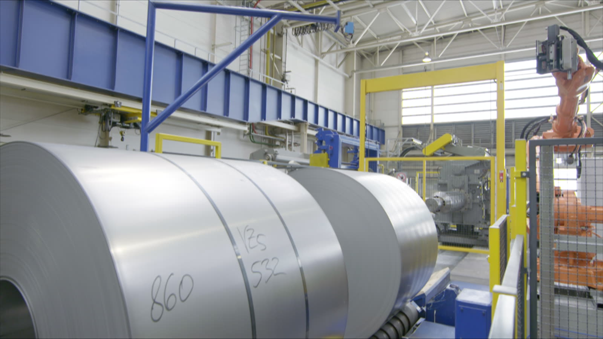
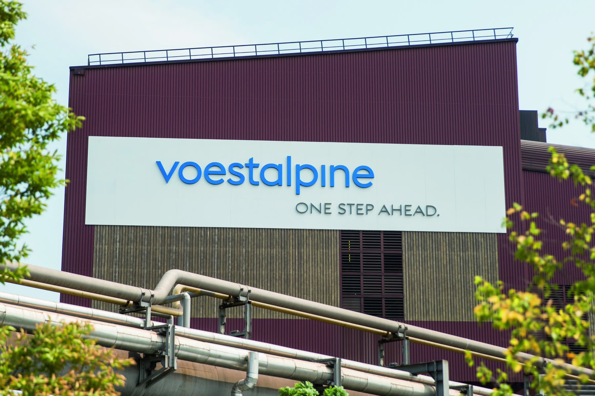
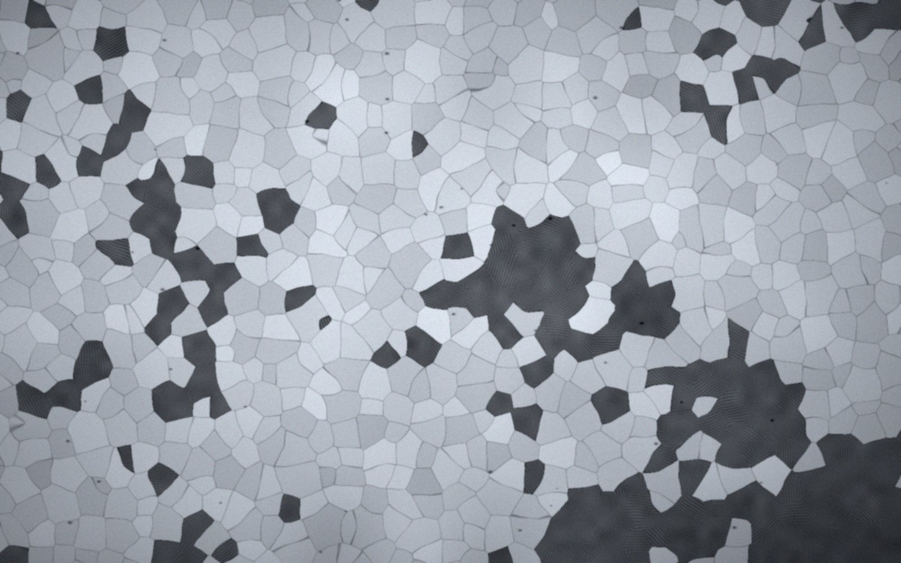

STEEL & MATERIALS
My school of business, industry and manufacturing.
My role at voestalpine
I spent eight years at voestalpine in Linz. During my first years I completed an apprenticeship as an industrial clerk, a full commercial training across three group companies. I learned how the departments of a large industrial group work together, from bookkeeping to sales, and how orders, material and data flow through its systems.
For most of my time there I worked in the quality department of voestalpine Stahl on non-conforming material: steel that failed to meet its standard or customer specification. I assessed it, decided what it could still be used for and worked to get it back onto an order. I was also a member of working groups aimed at optimising the entire non-conforming material process.
Alongside my job I completed the evening programme in materials technology at HTL Andorf, a higher technical college, graduating with the Matura. I studied how steel and plastics are made and processed, starting with casting, how steel grades and their microstructure form, the testing methods, and the problems that can arise in welding and in service.

The company
voestalpine AG is a steel and technology group headquartered in Linz, Austria, with around 500 group companies and locations in more than 50 countries. I worked mainly at voestalpine Stahl GmbH, which produces hot rolled, cold rolled and coated strip. I also worked at voestalpine Grobblech GmbH, which produces heavy plate for wind towers, shipbuilding and bridges, and at voestalpine Steel Service Center GmbH, which slits and cuts strip to customer dimensions.
Deciding on material, and understanding it
By day I worked in the quality department of voestalpine Stahl on non-conforming material. I assessed it, decided whether to release or block it and found a way back onto an order instead of scrap, bringing production, the lab, sales, logistics and, where needed, the customer to one decision. In the evenings I studied materials technology at HTL Andorf: how steel and plastics are made, how microstructure forms, why materials fail in welding and in service, and how they are tested. I prepared and examined metallographic sections, learned destructive and non-destructive testing, and applied it directly in my daily decisions.

Improving the process
Beyond single cases, I was a member of working groups aimed at optimising the entire non-conforming material process. There I brought in both views, the commercial and the technical, to improve how the whole workflow runs.
What this makes me
Translator
I turn technical deviations into business decisions and explain them to engineers, sales and customers alike.
Decision maker
I judge with data and standards and take responsibility for the outcome.
Process improver
I see a workflow across departments and help make it work better.
Photos and films: voestalpine AG, who provide them for public use on voestalpine.com. The micrograph and the workflow are illustrations. This is a personal portfolio page, not an official voestalpine page.